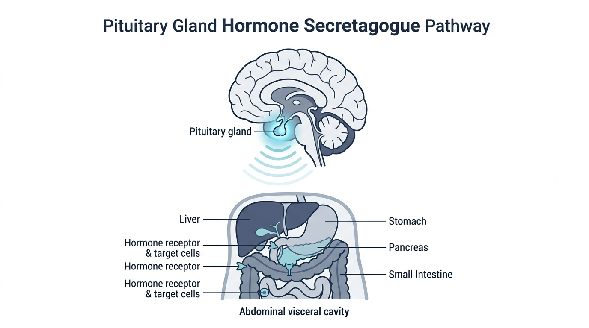

David Miller (52, a mechanical engineer from Chicago, Illinois) thought he had finally solved his decade-long battle with weight.
Like millions of Americans, David had started on a well-known GLP-1 receptor agonist. Over eight months, the digital bathroom scale moved downward by 38 pounds.
On paper, it looked like a triumph. But in the mirror, David faced a disorienting, demoralizing reality.
His face looked sunken. His shoulders had lost their athletic shape. His legs had narrowed noticeably. Yet right in the center of his torso, his stomach remained an unyielding, rock-hard dome that pushed aggressively against his dress shirts.
"I was weaker than I had been in my thirties," David recalls. "I couldn't bench press half of what I used to lift, I was exhausted by 2 PM every day, and my waistline still required a 38-inch belt. My doctor told me my weight was down, but my visceral fat ratio was actually worse."
During a comprehensive metabolic scan, his physician delivered the unsettling truth:
Up to 35% of the weight David lost was metabolically active skeletal muscle mass—while the dangerous, inflammatory visceral fat surrounding his liver and heart had barely budged.
Why Traditional Diets and Generic Weight Loss Drugs Miss the Deepest Fat
David spent the next three months researching clinical endocrinology papers. That is when he uncovered what top longevity researchers call the "Two-Compartment Biological Trap."
The human body does not treat fat as a single storage tank. It maintains two completely separate biological compartments that operate under entirely different hormonal rules:
- 1. Subcutaneous Fat (In Front of the Muscle Wall): The soft, pinchable fat sitting directly beneath the skin. When you starve yourself on a low-calorie diet or take an appetite suppressant, this is the primary reservoir your body burns (alongside your skeletal muscle).
- 2. Visceral Adipose Tissue / VAT (Behind the Muscle Wall): The dense, metabolically toxic fat packed deep behind your abdominal wall. It wraps tightly around your liver, pancreas, and intestines, secreting inflammatory cytokines (IL-6, TNF-alpha) directly into the portal circulation.
The 14% Cliff: Why Visceral Fat Locks In After Age 40
Why won't deep visceral fat burn with normal cardio or calorie restriction?
Because starting at age 30, the human pituitary gland undergoes an age-related decline known as "Somatopause."
Every decade after 30, natural pulsatile secretion of Growth Hormone-Releasing Hormone (GHRH) drops by approximately 14%. By age 50, the natural nighttime hormone pulses that trigger Hormone-Sensitive Lipase (HSL) in deep visceral fat are operating at a fraction of youthful levels.
Without that specific upstream pituitary signal, deep visceral fat remains locked in place—regardless of how few calories you consume.

The Scientific Breakthrough: The 44-Amino Acid GHRH Secretagogue
David's research connected him with clinical trials examining Tesamorelin—a synthetic 44-amino-acid peptide analog of human Growth Hormone-Releasing Hormone.
Unlike synthetic human growth hormone (which floods the bloodstream with unnatural, constant hormone levels and can shut down endogenous production), Tesamorelin functions as a precision secretagogue:
- Precision Pituitary Binding: Tesamorelin binds selectively to GHRH receptors on pituitary somatotrophs.
- Restoring Natural Pulsatility: It prompts the pituitary gland to synthesize and release the body's own growth hormone in physiological, pulsatile bursts during deep Stage 3/4 sleep.
- Targeted Visceral Lipolysis: The resulting pulsatile GH/IGF-1 signaling activates beta-3 adrenergic receptors located in deep visceral adipocytes, accelerating fat oxidation behind the muscle wall.
- Lean Muscle Preservation: Because it stimulates endogenous anabolism, it protects and rebuilds skeletal muscle tissue while shrinking visceral waist circumference.
Clinical Proof: CT-Scan Verified Human Clinical Trials
In randomized, double-blind, placebo-controlled Phase 3 clinical trials published in the New England Journal of Medicine (Falutz et al.) and confirmed across multi-center evaluations:
| CLINICAL OUTCOME | STANDARD DIET / GLP-1 | TESAMORELIN GHRH PROTOCOL |
|---|---|---|
| Visceral Fat (VAT) Reduction | 0% to 4% (Variable) | 15% to 20% Objective Reduction (CT Scan) |
| Lean Muscle Retention | Loss (-20% to -40% of weight lost) | PRESERVED & INCREASED |
| Pituitary Axis Safety | Blunted by stress/deficit | Natural Endogenous Pulsing Maintained |
| Triglycerides & CRP | Slow change | Substantial Biomarker Normalization |
David's 6-Week Transformation
Under clinical telehealth supervision, David initiated a targeted 6-week Tesamorelin protocol:
- Week 1: Sleep architecture deepened dramatically. Morning brain fog cleared, and resting HRV jumped within 5 days.
- Week 3: The rock-hard abdominal pressure began to soften. David lost 2.5 inches off his umbilical waistline without cutting calories further.
- Week 6: A follow-up scan revealed a total loss of 31 lbs of visceral fat, an increase of 4.2 lbs of lean muscle, and his waistline shrunk from 38" down to 32".
Frequently Asked Questions
Q: How is Tesamorelin different from GLP-1 medications (Semaglutide/Tirzepatide)?
A: GLP-1s work in the brain and gut to suppress appetite, which frequently leads to substantial lean muscle wasting. Tesamorelin is an endocrine secretagogue that specifically signals the pituitary to burn deep visceral fat behind the abdominal wall while preserving lean muscle.
Q: Will Tesamorelin shut down my natural hormones like synthetic HGH?
A: No. Synthetic HGH introduces exogenous hormones that shut down natural pituitary output. Tesamorelin is a GHRH analog that works with your pituitary gland, maintaining the body's natural feedback loops.
Q: How quickly do patients notice results?
A: Improvements in deep sleep and morning vitality manifest within 7 to 10 days. Measurable reductions in visceral waist circumference typically occur between Weeks 3 and 6.
60-Day Clinical Satisfaction Guarantee
If your clinical screening qualifies you and you do not experience a noticeable reduction in visceral midsection tightness, deeper restorative sleep, and enhanced physical vitality within 60 days, your protocol is 100% refundable.
Find Out If Your Midsection Is Trapped by Visceral Fat
Take the 2-minute clinical self-assessment below to check your qualification for the physician-guided Tesamorelin protocol.
START CLINICAL ASSESSMENT →